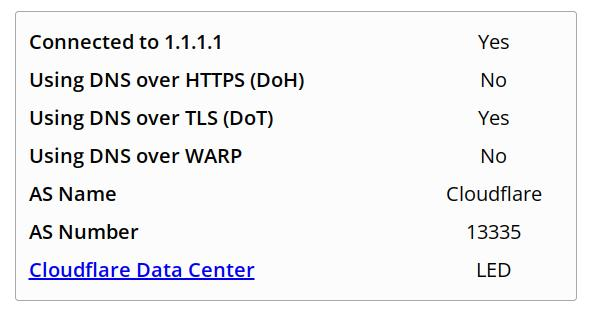
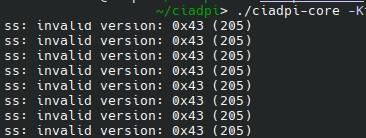

Заметил что весь движ в основном под винду, и вроде как blockcheck и goodcheck работают только на винде, есть ли аналоги на линукс?
blockcheck под линукс, можно сразу на роутере подбирать.
там прям репе же написано что не работает
NOTE: NOT WORKING CURRENTLY. ВНИМАНИЕ: НЕ РАБОТАЕТ НА ТЕКУЩИЙ МОМЕНТ
Собственно, byedpi. Юзаю на Убунте, Фре и OpenWRT.
[INFO] 2024-12-16 00:18:31: - Успешно: 0 из 39 (0%)
[WARN] 2024-12-16 00:18:31: - Неудачно: 39
как вычистить следы работы скрипта в системе?
обновил скрипт
сам почти все вычищает, удалите только службу.
[WARN] 2024-12-16 22:49:04: Топ 10 конфигураций:
0) -Kt,h -s1 -q1 -Ar -s5 -o1+s -At -f-1 --md5sig -r1+s -As -s1 -o1 +s -s-1 -b+500 --tls-sni=www.google.com --ttl 3 -An -Ku -a5 -s443+s -d80+s -d443+s -s80+s -An (Успех: 22%, 9/40, Неуспешно: 31####)
- -Kt,h -s0 -o1 -d1 -r1+s -Ar -o1 -At -f-1 --md5sig -r1+s -As,n -Ku -a5 -s443+s -d80+s -d443+s -s80+s -An (Успех: 12%, 5/40, Неуспешно: 35####)
- -Kt,h -q1 -r25+s -An -Ku -a7 -An (Успех: 7%, 3/40, Неуспешно: 37####)
- -Kt,h -d7 -s2 -An -Ku -a9 -An (Успех: 0%, 0/40, Неуспешно: 40####)
- -Kt,h -s1 -d3+s -Mh,d -At -r1+s -r3+s -An -Ku -a1 -An (Успех: 0%, 0/40, Неуспешно: 40####)
- -Kt,h -s1 -q1 -Art -f-1 --md5sig -r1+s -As,n -Ku -a1 -An (Успех: 0%, 0/40, Неуспешно: 40####)
- -Kt,h -d1 -s4 -d8 -s1+s -d5+s -s10+s -d20+s -An -Ku -a1 -An (Успех: 0%, 0/40, Неуспешно: 40####)
- -Kt,h -s10 -q3+h -f-1 --md5sig -Asn -Ku -a5 -s443+s -d80+s -An (Успех: 0%, 0/40, Неуспешно: 40####)
- -Kt,h -s9+s -q10+sn -f-1 --md5sig -Asn -Ku -a5 -s443+s -d80+s -An (Успех: 0%, 0/40, Неуспешно: 40####)
- -Kt,h -q1+s -s29+s -o5+s -f-1 --md5sig -Asn -Ku -a5 -s443+s -d80+s -An (Успех: 0%, 0/40, Неуспешно: 40####)
не понятно как эти конфиги работают, засунул верхний в byedpi на андроиде, вроде работают инста и ютуб, meduza, но тот же рутор или фейсбук не работают, как понять для каких адресов они работают?
в браузере через фокси прокси настроил, какие то еще на линухе есть варианты?
очень странные результаты у тебя
должны выбить заметно больше
во время теста прописывает.
но у тебя прям чет обидные результаты
главное ютуб заработал, открывается медуза, инста, ютуб, не работает рутор и фейсбук, остальное не проверял, провайдер йота мобильная, прошивка openwrt 14 c шифрованием

можно попробовать другой роутер, у меня их 6 накопилось если не ошибаюсь
честно говоря я не очень понимаю зачем под линуксом нужно что-то кроме запрета.
Использование byedpi на ПК и byedpi/byebyedpi на ТВ и смартфонах Android, позволяет использовать один конфиг на всех устройствах (в отсутствии роутера под прошивку).
Плюс byedpi более прост в запуске/настройке.
На zapret пришлось чуть больше времени потратить.
byedpi работает хуже запрета, и во вторых, т.к. менее популярен - больше проблем найти/подобрать стратегию
Byedpi менее популярен? Но ведь многие смотрят ютуб на андроиде, который популярен.
увы, но нет, они сидят на готовом чужом впне (не селфхостед)
мне кажется при нынешней инфляции купить роутер который точно поддерживает опенврт будет не самым плохим подарком на новый год.
лучше byedpi’ю быть чем не быть. например, допускаю сценарии, когда zapret не сможет обойти ту или иную блокировку, когда как byedpi сможет, и наоборот.
решил пощупать етот ваш байдпи, что я могу сказать - ох уенчик
успешный успех:
(Успех: 100%, 37/37, Неуспешно: 0####)
отдельное спасибо за автопонтбиралку для лИнукс 


ps
никак нельзя её заставить чтоб она verbose output делала в коньсоль чтоб видеть какие домемы проксинируется в ридми нина шол ваще такого ключа
Summary

upd ключ таки есть тока называется не --verbose а --debug